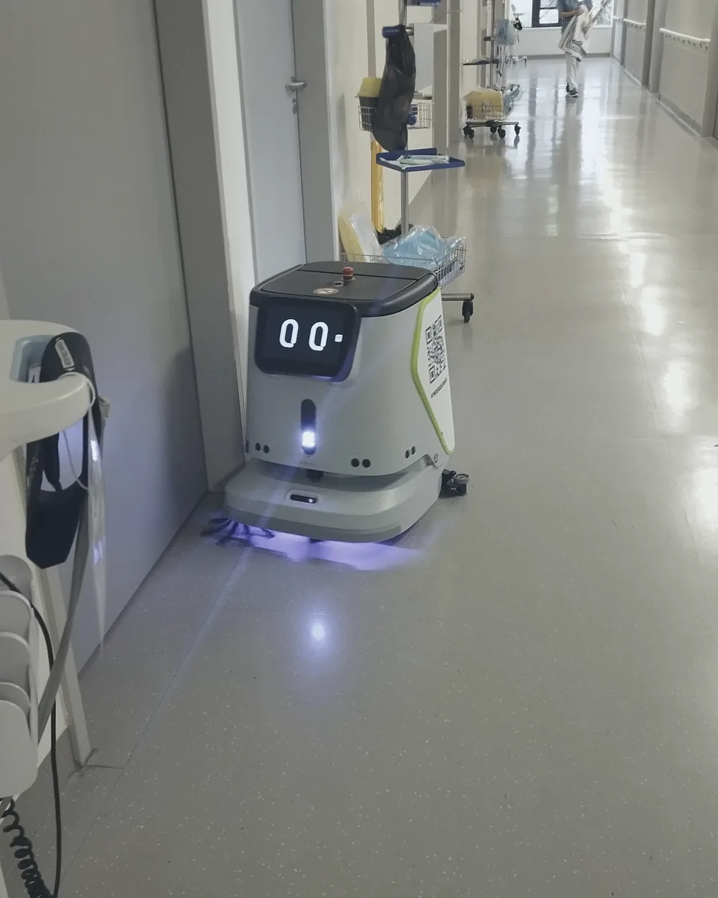
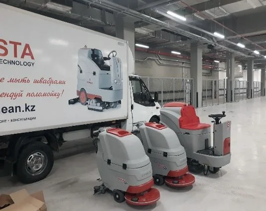
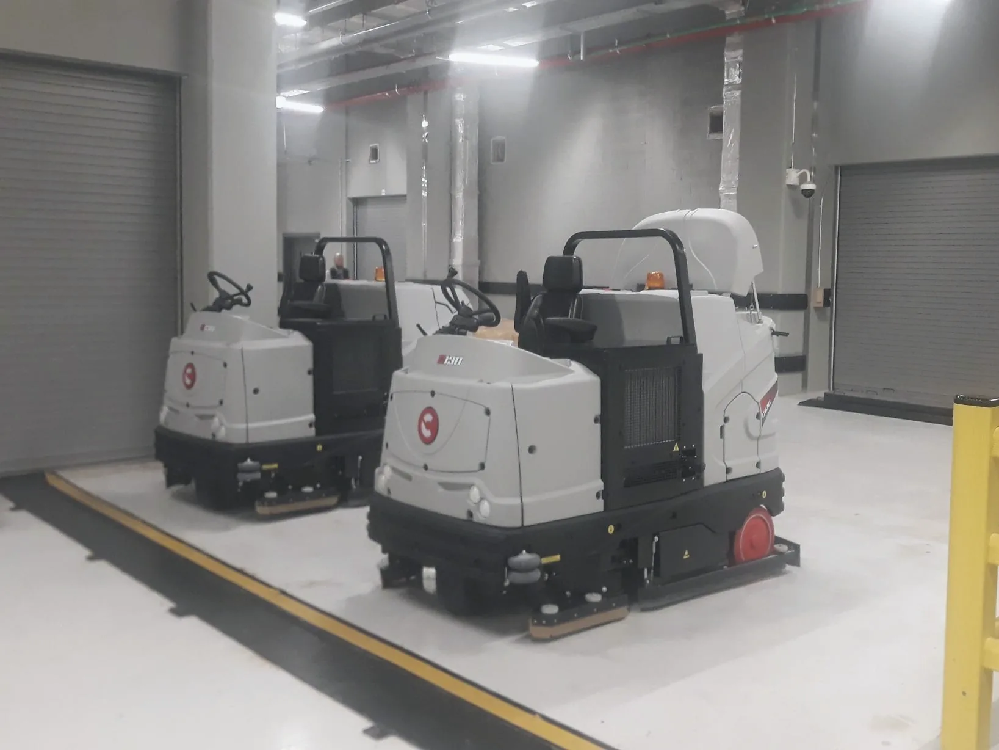
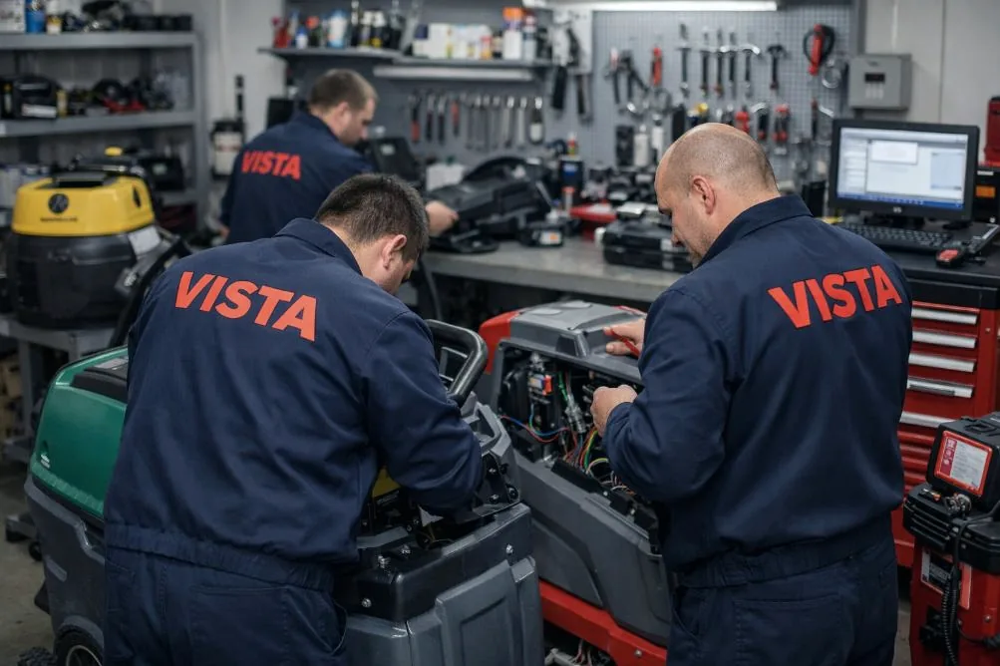
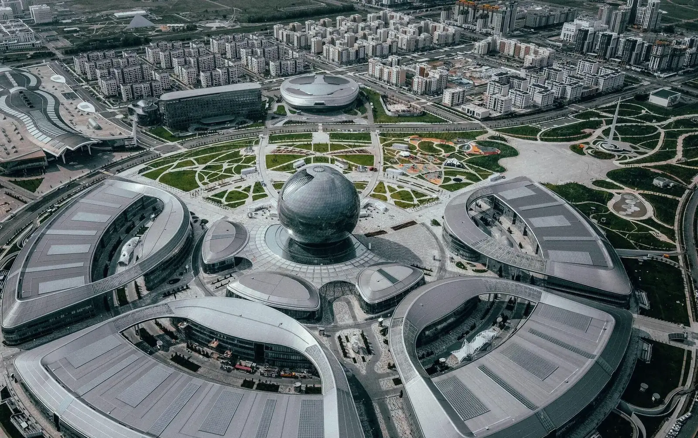

YANGZI
SC80
Автономный поломоечный робот для больших площадей. Для интенсивной уборки складских, производственных и коммерческих объектов.
- до 4 000 м²/ч
- ширина уборки 1 160 мм
- баки 140 / 170 л, до 6 ч работы

Казахстан · поставка, внедрение и сервис · с 2010 года
Подбор, внедрение, настройка и сервисное сопровождение роботизированных систем.
Поставляем профессиональные роботизированные решения от ведущих мировых производителей: Comac SELF.Y (Италия), роботы YANGZI и PUDU, дроны HOCH и многие другие.
От подбора оборудования до внедрения, обучения персонала и сервисного сопровождения. Опыт VISTA на рынке профессионального уборочного оборудования - с 2010 года.
Объекты и техника в InstagramРоботизированная уборка
Роботизированные системы уборки для бизнеса, промышленности и инфраструктурных объектов.
Внедряем интеллектуальные технологии, которые автоматизируют рутинные процессы уборки, оптимизируют работу персонала и обеспечивают стабильное качество обслуживания объектов.
Техника VISTA работает на объектах
По объекту
Подберём роботизированное решение с учётом особенностей вашего объекта, площади, типа покрытия, характера загрязнений и графика уборки.



Comac · Италия
COMAC SELF.Y - интеллектуальная поломоечная машина итальянского производства, предназначенная для автоматизации регулярной уборки коммерческих и общественных пространств.
Благодаря системе навигации и технологиям картографирования помещений машина может самостоятельно выполнять уборку по заданным маршрутам. При необходимости оператор может переключить её в ручной режим управления.
Оборудование
Роботы для пола, машины с повторным использованием воды и дроны для фасадов. И сервис-центр VISTA, который держит технику в работе.
Подбираем модель под покрытие, площадь и график. Характеристики - по данным производителей, точную комплектацию считаем в коммерческом предложении.
YANGZI
Автономный поломоечный робот для больших площадей. Для интенсивной уборки складских, производственных и коммерческих объектов.

YANGZI
Интеллектуальный робот для автоматизированной мойки полов. Для торговых центров, складов, бизнес-центров и общественных пространств.

YANGZI
Автономный робот-подметальщик. Для сухой уборки складов, паркингов и открытых территорий.

PUDU
Интеллектуальный робот для сухой и влажной уборки. Объединяет функции подметания и мойки в одном устройстве.

PUDU
Многофункциональный робот 4-в-1. Объединяет подметание, мойку, пылесос и уход за различными типами напольных покрытий в зависимости от комплектации.

PUDU
Интеллектуальный робот-подметальщик с технологиями искусственного интеллекта. Предназначен для автоматизированной сухой уборки больших площадей.

Серия TN
Автономный промышленный поломоечный робот. Для регулярной уборки коммерческих, складских и производственных помещений.

Серия TN
Компактный многофункциональный уборочный робот. Для автоматизации уборки небольших и средних помещений, коридоров и общественных зон.
Не нашли подходящую модель? Подберём роботизированное решение с учётом особенностей вашего объекта, задач и бюджета.
Подобрать робота под объект
VISTA Clean Technology
За подбором роботов и систем стоят люди, которые с 2010 года поставляют и чинят технику для уборки по всему Казахстану - и знают, какое покрытие, грязь и график у объектов здесь.
Заказчики
Часть из 3000+ проектов - по типам объектов, с которыми приходят за роботами и системами мойки.
YANGZI SC50 · склад
YANGZI SC50 сам проходит склад после закрытия - к открытию пол чистый, а отчёт у ответственного.
Ролики производителя: цех, склад, ночная смена, территория и холл здания - робот проходит маршрут сам.
Навигация робота
Один раз строим карту и размечаем зоны - дальше маршрут проходится сам, а ответственный получает отчёт по каждой зоне.
 HXC
HXC HYC
HYCОператор управляет мойкой с земли - без люлек, лесов и людей на высоте. Вода под давлением идёт по шлангу, маршрут по фасаду задаётся в приложении.
| Характеристика | HXC | HYC |
|---|---|---|
| Высота полёта | до 100 м | до 300 м |
| Шланг подачи воды | 100 м | 200 м |
| Полёт с полной нагрузкой | до 17,5 мин | до 19 мин |
| Масса дрона | 11,6 кг | 19,4 кг |
Видео:

Comac ReWater / NCS, InAqua и решения для обычных поломоечных машин: раствор фильтруется и возвращается в работу вместо слива. Расход воды и число остановок на залив считаем под ваш объект.
Внедрение
Робот не заменяет ваш парк машин, а забирает однотипные длинные маршруты. Поэтому начинаем с пилота и решаем по цифрам вашего объекта.
Условия
Цены на оборудование - от 4 000 000 тг. Точную стоимость считаем после подбора под объект: модель, комплектация, количество.
Получить коммерческое предложениеПроизводители: Comac · YANGZI · PUDU · HOCH · InAqua · и другие - под задачу объекта

Сервис-центр VISTA
Техника работает, пока за ней есть кому смотреть. Свой сервис-центр и инженеры-электронщики - в Астане, Алматы и Костанае, выезд по всему Казахстану.
Заявка
Оставьте тип объекта и задачу - инженер VISTA ответит в течение 15 минут в рабочее время и предложит 1-2 варианта с демонстрацией.

Астана · Алматы · Костанай
Головной офис в Астане, филиалы в Алматы и Костанае. Выезжаем и поставляем по всему Казахстану.